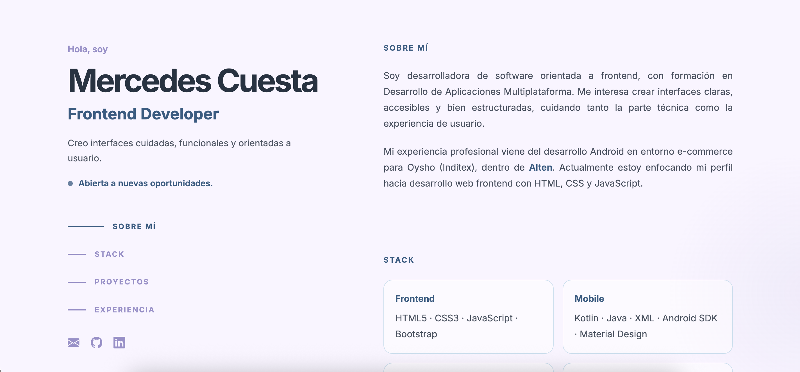
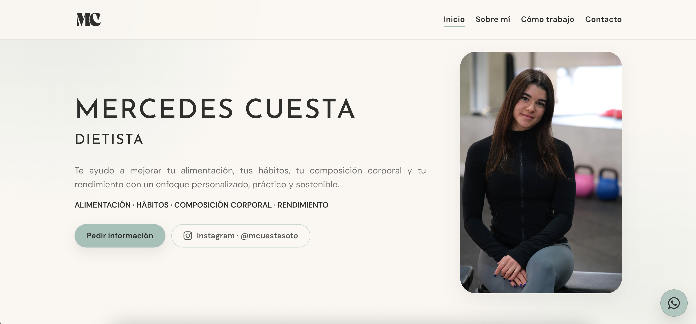

Frontend
HTML5 · CSS3 · JavaScript · Bootstrap
Soy desarrolladora de software orientada a frontend, con formación en Desarrollo de Aplicaciones Multiplataforma. Me interesa crear interfaces claras, accesibles y bien estructuradas, cuidando tanto la parte técnica como la experiencia de usuario.
Mi experiencia profesional viene del desarrollo Android en entorno e-commerce para Oysho (Inditex), dentro de Alten. Actualmente estoy enfocando mi perfil hacia desarrollo web frontend con HTML, CSS y JavaScript.
HTML5 · CSS3 · JavaScript · Bootstrap
Kotlin · Java · XML · Android SDK · Material Design
SQL · Firebase · Hibernate · REST API
Git · GitHub · Jira · Android Studio · VS Code

01
Web personal tipo CV desarrollada para presentar mi perfil técnico, experiencia y CV. Incluye navegación interna, diseño responsive, accesibilidad, Open Graph, visualización del CV y enlaces profesionales.

02
Landing profesional desarrollada para mi marca de dietética online, con estructura por secciones, diseño responsive, contenido web, enlaces de contacto, llamada a la acción por WhatsApp y Open Graph.
2022 — 2025
Desarrollo y mantenimiento de aplicación Android e-commerce en producción para Oysho (Inditex), implementando interfaces de usuario y lógica de cliente con Kotlin, Java y XML.
Integración con APIs REST, gestión de datos en cliente, resolución de incidencias, mantenimiento evolutivo y colaboración con equipos de diseño, backend y QA en entorno Agile/Scrum.